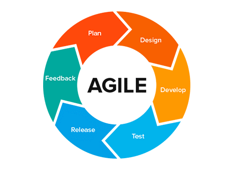
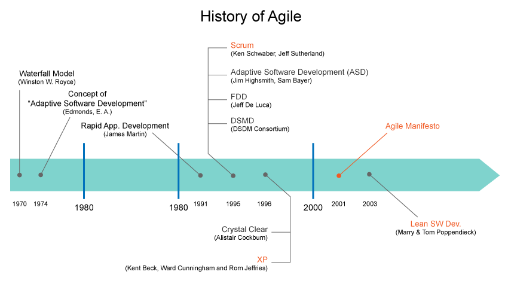
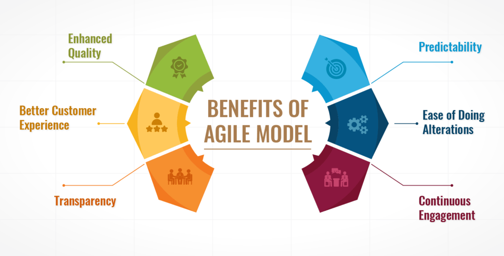
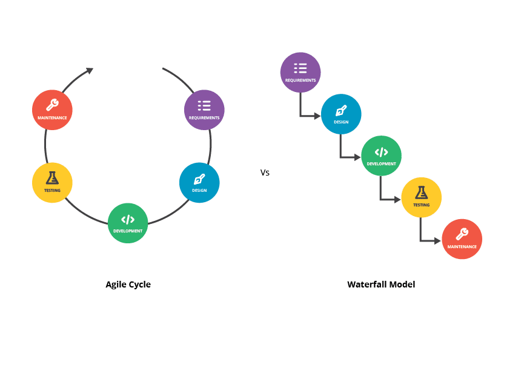

About This Course
In this course, you’ll learn
The key concepts and tools of Agile Development and Agile Project Management.
How to apply Agile in your job and projects.
The difference between Agile and traditional project delivery
About the history of Agile.
How to use Agile to deliver quickly and often.
Principles of Agile methodology
AGILE
NEXT
Definition
Agile methodology is a type of project management process, mainly used for software development,
where demands and solutions evolve through the collaborative effort of self-organizing and
cross-functional teams and their customers.
Agile is a project management approach developed as a more flexible and efficient way to get
products to market. The word ‘agile’ refers to the ability to move quickly and easily. Therefore,
an
Agile approach enables project teams to adapt faster and easier compared to other project
methodologies.
Many of today’s projects have more unknowns than a traditional project management methodology can
adequately handle. This uncertainty makes it challenging to document requirements and adapt to
changes successfully.
This guide will explain the Agile methodology, which projects will benefit from an Agile approach,
and how to implement one effectively.You can run an Agile project using several different
frameworks. Some of the more popular ones include:
- Scrum
- Kanban
- Extreme Programming
- DSDM

NEXT
History
In the 1990s, software development faced a bit of a crisis. Referred to as ‘the application
development crisis’ or ‘application delivery lag’, the industry realized that it couldn’t move fast
enough to meet customer demands and requirements—the estimated time between a business need and
actual application was about three years.
See, traditional development models were based on a
timeline approach, where development happened sequentially and the final product wasn’t revealed to
customers until the very final step.
This left little room for flexibility when it came to progress
reviews and changes. So, by the time an actual application was finished, it was highly likely that
requirements and systems of the project’s original objectives had changed.
With time, money, and efforts wasted, and even some projects cancelled halfway through, professional
leaders of the software community thought it was time for a new, refreshed approach.
Then in 2001,
in a snowy, ski lodge in Utah, a group of industry practitioners gathered to discuss industry
practices. Though the meeting was set up with a primary focus on the discussion of development
cycles, some participants were already entertaining the idea of a new software development method.
They all yearned to cement a process that legitimized what was being practised, and so, came the
creation of the Agile Manifesto.

NEXT
Agile Principles
- Our highest priority is to satisfy the customer through early and continuous delivery of
valuable software.
- Welcome changing requirements, even late in development. Agile processes harness change for
the
customer's competitive advantage.
- Deliver working software frequently, from a couple of weeks to a couple of months, with a
preference for shorter timescales.
- Business people and developers must work together daily throughout the project.
- Build projects around motivated individuals. Give them the environment and support they need
and
trust them to get the job done.
- The most efficient and effective method of conveying information to and within a development
team is face-to-face conversation.
NEXT
Agile Principles
- Working software is the primary measure of progress.
- Agile processes promote sustainable development. The sponsors, developers, and users should be
able to maintain a constant pace indefinitely.
- Continuous attention to technical excellence and good design enhances agility.
- Simplicity – the art of maximizing the amount of work not done – is essential.
- The best architectures, requirements, and designs emerge from self-organizing teams.
- The team discusses how to become more effective at regular intervals, then tunes and adjusts
its
behaviour accordingly
NEXT
Advantages of Agile Project Management
Any project that evolves or does not have clear scope and requirements at the start
Organizations that work in a fast-changing environment, such as technology
Organizations that need to work closely with their customers and other external parties
throughout the life of the project
Companies that emphasize process and product improvement and are constantly looking to
innovate
Projects with many interdependent tasks, where the team needs to work closely and frequently
communicate to ensure success
Companies that need to create a prototype before building the final project outcome
Projects that require rapid feedback from stakeholders about each product iteration before
moving on to the next version or draft

NEXT
Benefits of Agile methodologies
Benefits:
Continuous Customer Contact
Ability to Adapt
Faster Delivery
Lower Project Risk
Ongoing Innovation
Superior quality product
Customer satisfaction
Better control
Improved project predictability
Continuous improvement
Improved team morale.
NEXT
Bad practices
There are certain scenarios whre Agile could prove to be costly or not
effective.
The scenarios are listed below:
The outcome of your project is stable and well understood
Stakeholders don't want Agile
Company can't support Agile
NEXT
Agile v/s Waterfall
Agile methodology project management and Waterfall project management are two of the more
popular methods for organizing projects. When determining how to plan and run your next project,
you’ll likely start by comparing Agile and Waterfall project management to determine which is
more
suitable.
Waterfall is a more traditional approach to project management, involving a linear project
flow. It’s best for clearly defined projects with definitive timelines and well-defined
deliverables from the outset. In other words, if your major project constraints are well
understood and documented, Waterfall is likely your best option.
Core principles of Waterfall:
- Gathering all requirements upfront
- Completing all work in structured, sequential, pre-defined phases
Conversely, Agile was created to handle projects where the primary constraints are not well
understood.
As discussed earlier, Agile is an iterative, flexible approach to projects. This method splits
a
project into stages or “sprints,” allowing it to mature and evolve as you gain more information.
When deciding between Waterfall project management and Agile, it should ultimately come down
to
your end product’s maturity and how well you understand the project’s outcomes and requirements
in
the initiation phase.

Take Quiz
 }}) {%endblock%}
{% block username %}
{%endblock%}
{% block username %}